Data Science for Electron Microscopy
Week 8: Unsupervised learning & autoencoders for EM
FAU Erlangen-Nürnberg
Institute of Micro- and Nanostructure Research


Recap: Week 7 and today’s question
- Week 7: three strategies for beating the labelled-data bottleneck — data augmentation, transfer learning from ImageNet, and Voronoi synthetic pre-training.
- Core insight: transfer learning imports features learned elsewhere and fine-tunes them; but ImageNet features carry a real domain gap to EM data (diffraction patterns, EELS maps, atomic-resolution HAADF look nothing like dogs or cars).
- The remaining gap: what if we have 10 000 unlabelled EELS spectra from our own microscope — no labels, no ImageNet, no synthetic generator — and we want to extract chemical information from them?
- Today’s answer: unsupervised learning. We do not need labels to find structure. The data itself provides the supervisory signal.
- Concrete payoff: a denoising autoencoder trained on low-dose spectra recovers clean peak shapes; its latent space clusters iron-oxide phases with no labels; anomalous spectra (damaged regions, contamination) stand out by high reconstruction error.
Road map and self-study
- Road map: recap Week 7 + today’s question (2) · unsupervised learning landscape — what and why (3) · k-means: Lloyd’s algorithm, initialization, choosing K, failure modes, practical tips (5) · GMM as soft clustering (3) · manifold hypothesis and why compression works (3) · autoencoders: architecture, reconstruction, PyTorch, bottleneck choice (4) · linear AE ≈ PCA; nonlinear AE beyond PCA (3) · denoising autoencoders for low-dose EELS/EDS (4) · latent space: t-SNE/UMAP visualization and phase clustering (4) · anomaly/novelty detection by reconstruction error and latent outliers (3) · VAE conceptual preview — rVAE for STEM; full math Week 12 (3) · putting it together + forward link to Week 9 (3) — 40 content slides total (within the 40–48 target).
- Self-study:
notebooks/week08_denoising_autoencoder.ipynb— build synthetic noisy EELS-like spectra, train a small denoising autoencoder on CPU in under 2 minutes, compare AE vs PCA denoising, visualise latent-space phase clusters, and explore the effect of bottleneck dimension in the exercise.
The unsupervised learning landscape
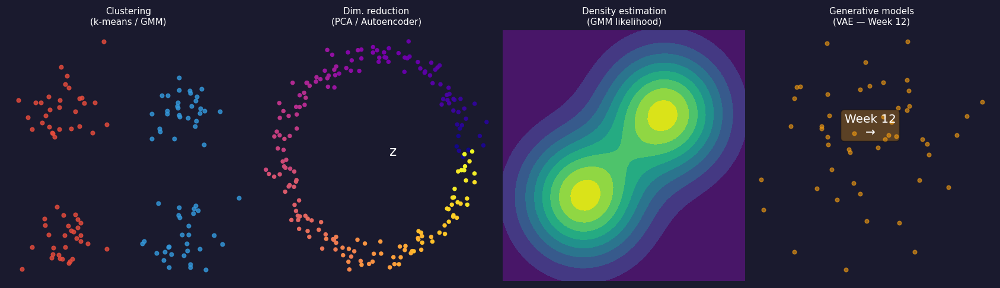
The four families of unsupervised learning. Clustering assigns each spectrum to a discrete group (k-means, GMM). Dimensionality reduction finds a low-dimensional coordinate that summarises each spectrum (PCA, autoencoder). Density estimation models the full probability distribution over spectra. Generative models sample new spectra from that distribution — introduced as a teaser for Week 12.
Why unsupervised matters for electron microscopy
- Most EM data arrives unlabelled. A 4D-STEM scan is hundreds of GB of diffraction patterns; an EELS map is millions of spectra. None of them come with a label until a human expert provides one.
- Clustering for exploration: before you can label, you need a hypothesis. Unsupervised clustering of spectra surfaces candidate phases for a domain expert to inspect.
- Compression for speed: a 1024-channel EELS spectrum can be compressed to 8 latent numbers without losing chemical content — enabling interactive visualisation of maps that would otherwise be too slow to display.
- Anomaly detection for quality control: spectra from contaminated regions, beam-damaged areas, or novel chemistry reconstruct poorly from an AE trained on normal data — flagged automatically, at zero annotation cost.
- The rule of thumb: if you have no labels at all, start with PCA to understand dimensionality, then an AE to capture non-linear structure Sandfeld, Stefan et al., (2024).
Unsupervised methods and their EM applications
- K-means: fast geometric clustering of spectral vectors or latent codes. Phase maps from EELS, EDS phase identification. Output: hard cluster labels (each spectrum belongs to one phase) Bruefach, Alexandra et al., (2023), doi:10.1063/5.0130546.
- GMM: soft probabilistic clustering — boundary spectra get a mixture of responsibilities. Better for overlapping phases (e.g., Fe₂⁺/Fe³⁺ mixtures).
- PCA: linear dimensionality reduction; Week 3 foundation. Decomposes a spectral map into orthogonal “eigenspectra” and abundance maps. Fast, interpretable, assumes linear mixing.
- Autoencoder: non-linear generalization of PCA. Learns curved manifolds — peak shifts, fine-structure changes, non-linear mixing. Today’s main topic.
- t-SNE / UMAP: visualize high-dimensional latent codes in 2D. Diagnostic tool for latent space quality; not a dimensionality reduction method for downstream tasks.
K-means: objective and Lloyd’s algorithm
Assign \(N\) spectra \(\{x_1, \ldots, x_N\} \subset \mathbb{R}^d\) to \(K\) groups \(C_1, \ldots, C_K\) by minimising:
\[ J = \sum_{k=1}^{K} \sum_{x_i \in C_k} \|x_i - \mu_k\|^2. \]
Lloyd’s algorithm — alternate two steps until assignments stop changing:
- Assign: each spectrum goes to its nearest centroid \(\mu_k\).
- Update: each centroid moves to the mean of its assigned spectra.
Each step strictly decreases \(J\); convergence in finitely many steps is guaranteed — to a local minimum.
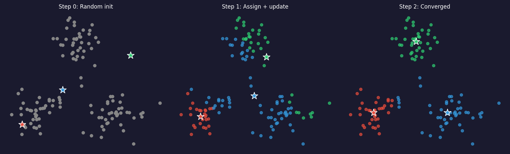
K-means: initialization and K-means++
- The problem: random initialization can place two centroids in the same cluster and miss another entirely. Different random starts give different final clusterings.
- K-means++ (standard default in scikit-learn) solves this:
- Pick the first centroid uniformly at random.
- Pick each subsequent centroid with probability proportional to \(D(x)^2\) — the squared distance to the nearest already-chosen centroid.
- This spreads the initial centroids, giving a provably better expected final \(J\).
- Practical recipe: use K-means++ plus 5–10 random restarts; keep the run with lowest \(J\).
- EM application: clustering latent codes (8-D AE output) rather than raw spectra (1024-D) makes K-means dramatically faster and more stable — the latent space is better conditioned Bruefach, Alexandra et al., (2023), doi:10.1063/5.0130546.
Choosing K: elbow method and silhouette score
Elbow method: - Run k-means for \(K = 1, 2, \ldots, K_{\max}\). - Plot \(J(K)\) vs \(K\). Look for the elbow: the point where \(J\) stops dropping fast. - Intuition: adding one more cluster beyond the true \(K\) gives diminishing returns.
Silhouette score: \[s(x_i) = \frac{b(x_i) - a(x_i)}{\max(a(x_i), b(x_i))}\] where \(a\) = mean intra-cluster distance, \(b\) = mean distance to nearest other cluster. Range: \([-1, 1]\), higher is better. Pick \(K\) that maximises mean silhouette.
Rule: use elbow and silhouette together. If they agree, more confidence.
- \(J(K)\) always decreases — at \(K = N\) every point is its own cluster and \(J = 0\).
- The elbow signals diminishing returns from extra clusters.
- Silhouette gives a per-point quality score: \(s > 0.5\) indicates good separation.
- Materials caveat: there is no objectively “correct” number of phases — the right \(K\) is the one a metallurgist or surface scientist can interpret. Use domain knowledge as a final sanity check.
K-means failure modes in EM data
- Spherical assumption: k-means uses Euclidean distance to a single centroid — implicitly assuming clusters are spherical and equal-sized. An elongated cluster (e.g., a phase with a peak that shifts continuously) is split incorrectly.
- Scale sensitivity: a single high-intensity spectral feature (zero-loss peak, characteristic X-ray line) dominates the Euclidean distance and swamps chemical differences. Fix: normalise each spectrum to unit peak or cluster latent codes.
- Outlier sensitivity: a single contaminated spectrum with extreme intensity pulls a centroid far from the true phase centre. Fix: remove outliers first (reconstruction-error threshold from the AE) or use K-medoids.
- No uncertainty: a spectrum on the boundary between two phases gets a hard label — but a human expert would call it “mixed.” GMM addresses this.
K-means in practice: the AE latent space is better to cluster
- Raw spectra (1024-D): Euclidean distance is dominated by the zero-loss peak and the absolute intensity level. Two spectra with the same chemistry but different sample thicknesses cluster differently — wrong.
- PCA scores (top-\(k\) components): variance-weighted projection. Better than raw, but linear. Minority phases with low total variance can be compressed into noise-floor components.
- AE latent codes (\(k\)-D): by definition, these \(k\) numbers are the most information-efficient representation the network found. They discard noise and capture chemical identity — the right things to cluster Peña, Francisco de la et al., (2019).
- Practical recipe for EM: (1) normalise each spectrum to unit peak intensity; (2) train denoising AE to \(k\)-D latent; (3) run k-means on latent codes; (4) visualise cluster centroids decoded back to spectrum space to verify chemical assignment.
- The rule: never cluster 1024-D raw spectra with k-means. Always reduce dimension first — PCA for a fast baseline, AE for the production pipeline.
GMM: soft clustering for overlapping phases
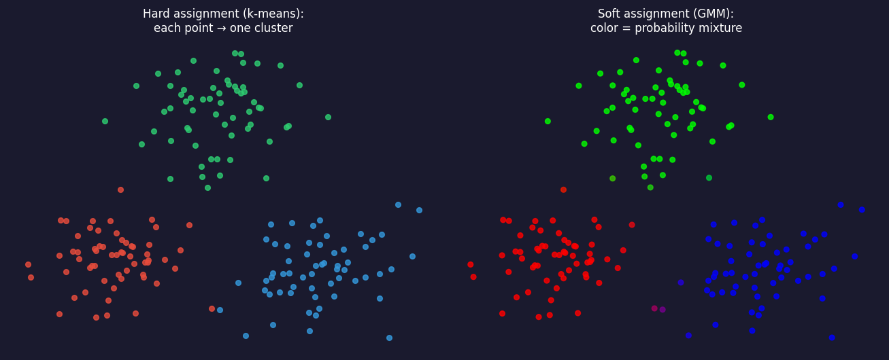
Hard vs soft assignment on the same spectral dataset. Left: k-means — each point belongs to exactly one phase (coloured circles). Right: GMM — each point carries a probability over phases; points near boundaries are shown as colour mixtures. This matters physically when EELS spectra from a transition zone contain contributions from both adjacent phases.
GMM: the model and the key intuition
A weighted sum of \(K\) Gaussian densities: \[ p(x) = \sum_{k=1}^{K} \pi_k \,\mathcal{N}(x;\,\mu_k,\,\Sigma_k), \quad \sum_k \pi_k = 1. \]
Intuition: each phase \(k\) is modelled as a Gaussian cloud of spectra centred on the phase-representative spectrum \(\mu_k\) with a covariance \(\Sigma_k\) encoding spectral variability.
Soft assignment (responsibility): \[\gamma_{ik} = P(\text{phase } k \mid x_i) \propto \pi_k\,\mathcal{N}(x_i;\,\mu_k,\Sigma_k).\]
- K-means vs GMM: same goal, different shape. K-means allows only spherical clusters; GMM allows ellipsoidal clusters of any orientation.
- EM payoff: an Fe₂O₃ phase may have higher variance along the Fe-L₂₃ edge than along the O-K edge. A full-covariance GMM captures this anisotropy; k-means cannot.
- Fitting: alternating E-step (compute \(\gamma_{ik}\)) and M-step (update \(\mu_k, \Sigma_k, \pi_k\)). No full EM derivation needed here — the intuition is alternating between “which phase does this spectrum belong to?” and “what is each phase’s average spectrum?”.
K-means vs GMM: comparison table
| K-means | GMM | |
|---|---|---|
| Assignment | hard (one cluster) | soft (probability vector) |
| Cluster shape | spherical | ellipsoidal (full \(\Sigma\)) |
| Speed | fast | slower (covariance update) |
| Boundary handling | abrupt | smooth |
| Choosing \(K\) | elbow + silhouette | BIC (penalised log-likelihood) |
| High-dim risk | Euclidean dominance | covariance explosion (\(d^2\) params) |
Rule of thumb: k-means for fast exploration; GMM when clusters overlap, vary in shape, or you need probabilities for downstream decisions. In both cases, prefer clustering latent codes over raw spectra Murphy, Kevin P., (2012).
The manifold hypothesis: why compression works
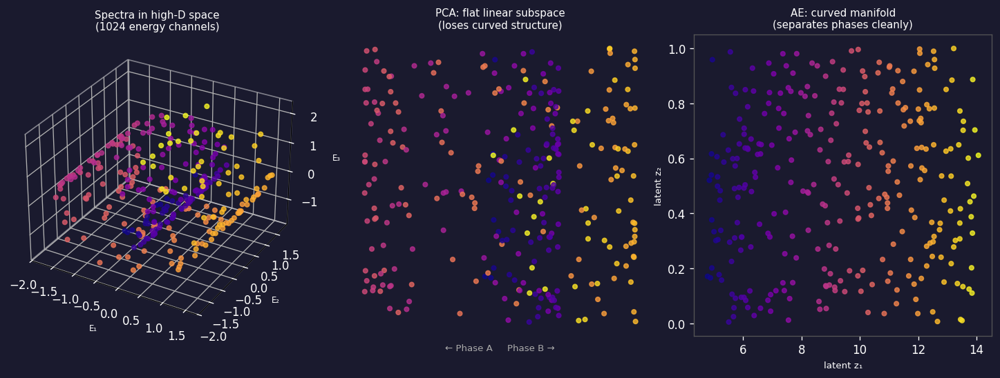
From high-dimensional spectra to a curved low-dimensional manifold. Left: three-dimensional view of data lying on a curved 2D surface embedded in 3D (analogy for 1024-D spectra on a ~10-D surface). Centre: PCA finds the best flat hyperplane — it unrolls the curve linearly and loses structure. Right: a nonlinear autoencoder follows the curved manifold, keeping phases separated along interpretable latent axes.
Why the manifold dimension matters for EM spectra
- Physical argument: a pure-phase EELS spectrum is determined by a small number of physical parameters — elemental identity, oxidation state, bonding geometry, thickness. For a two-phase system these might be five numbers. Yet we measure 1024 energy channels.
- Consequence: 1024 channels – 5 physical degrees of freedom = ~1019 dimensions of noise and redundancy.
- PCA captures this as: variance explained by the first 5 components >> variance in remaining components. The “scree plot elbow” (Week 3) is a direct signature of the manifold dimension.
- Autoencoder advantage: PCA’s subspace is flat; a real spectral manifold is curved — oxidation-state changes cause non-linear peak-position and intensity changes. A nonlinear AE can represent this curved surface with fewer latent dimensions than PCA needs Goodfellow, Ian et al., (2016).
- Rule: if the scree plot elbow is at \(k\), try a bottleneck of \(k\) to \(2k\) in the AE.
The manifold hypothesis in practice: 4D-STEM example
- Bruefach, Alexandra et al. (2023), doi:10.1063/5.0130546 applied clustering to 4D-STEM datasets of silver nanoparticles. Each diffraction pattern (128×128 pixels) lives in a 16 384-dimensional space.
- Observation: for a three-phase dataset (three crystallographic orientations), only a handful of principal components capture the orientation information; the rest is shot noise.
- Pipeline: PCA → keep top 10 components → k-means with \(K=3\) → phase map. Without PCA pre-compression, k-means fails because noise dominates Euclidean distance.
- The generalisation: replace PCA with an AE when orientations vary non-linearly (e.g., continuous tilt series). The AE latent space then smoothly parameterises orientation as a 1-D or 2-D latent coordinate.
- Lesson: always compress before clustering. Noise lives in all dimensions equally; signal lives in a low-dimensional manifold.
Autoencoder architecture: encoder–bottleneck–decoder
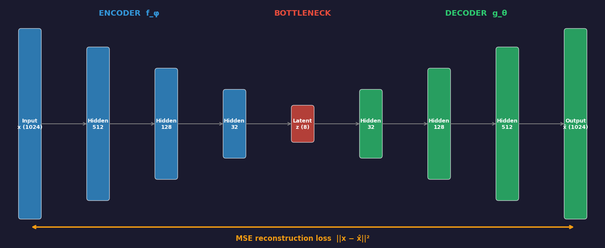
A deep autoencoder for spectral data. The encoder (blue, left) progressively compresses a 1024-channel spectrum to an 8-dimensional latent code z through successive hidden layers. The decoder (green, right) reconstructs the original 1024 channels from z. The bottleneck (red, centre) is the only constraint: it must retain enough information to reconstruct the input. The MSE reconstruction loss (orange, bottom) is the only supervisory signal — no labels needed.
Autoencoder: the reconstruction objective
The autoencoder minimises: \[ \mathcal{L}(\theta, \phi) = \frac{1}{N}\sum_{i=1}^{N} \bigl\|x_i - g_\theta(f_\phi(x_i))\bigr\|^2. \]
No labels — only the inputs themselves serve as targets. This is self-supervised: the supervisory signal is built into the data.
Minimising \(\mathcal{L}\) forces the bottleneck \(z = f_\phi(x)\) to retain enough information to reconstruct \(x\). This is the minimum description length principle: compress as much as possible while losing as little as possible.
In PyTorch (one line):
For Poisson-noisy EM spectra: consider Poisson negative-log-likelihood as the loss instead of MSE, because pixel variance grows with the signal Sandfeld, Stefan et al., (2024).
Autoencoder in PyTorch: spectral data
import torch
import torch.nn as nn
class SpectralAE(nn.Module):
def __init__(self, input_dim=128, latent_dim=8):
super().__init__()
self.encoder = nn.Sequential(
nn.Linear(input_dim, 64), nn.ReLU(),
nn.Linear(64, 32), nn.ReLU(),
nn.Linear(32, latent_dim) # bottleneck — no activation
)
self.decoder = nn.Sequential(
nn.Linear(latent_dim, 32), nn.ReLU(),
nn.Linear(32, 64), nn.ReLU(),
nn.Linear(64, input_dim) # output — no activation for spectra
)
def forward(self, x):
z = self.encoder(x)
x_hat = self.decoder(z)
return x_hat, z # return both for clustering
# Training loop (standard):
# loss = F.mse_loss(x_hat, x_clean) # denoising AE: target is clean!
# loss.backward(); optimizer.step()Choosing the bottleneck dimension \(k\)
- Too small ($k < $ intrinsic dim): the AE underfits — reconstruction error is high even on training data. Phases that differ only subtly get merged into a single latent cluster.
- Too large ($k > $ intrinsic dim): the AE overfits — extra latent dimensions encode noise rather than signal. Latent clusters spread out and silhouette score drops.
- Procedure: sweep \(k = 1, 2, \ldots, 2K_{\text{true}}\); plot validation reconstruction error vs \(k\) and look for the elbow. Cross-check with silhouette score — both should peak near the true intrinsic dimension.
- Sanity check: compare against PCA at the same \(k\). A nonlinear AE should reconstruct at least as well as PCA; if the AE underperforms PCA, it is either under-trained or the bottleneck is too narrow.
- Rule of thumb: start with $k = $ number of known phases. For an EELS map of an iron-oxide film with 3 known phases, try \(k = 3, 4, 5\); the notebook exercise demonstrates this sweep concretely.
Linear autoencoder = PCA
- Remove all nonlinear activations: \(f_\phi(x) = W_e x\), \(g_\theta(z) = W_d z\).
- Theorem (Baldi & Hornik 1989): with MSE loss, the optimal \((W_e, W_d)\) satisfy \(W_d W_e = U_k U_k^T\), where \(U_k\) contains the top-\(k\) left singular vectors of the centred data — exactly the PCA subspace.
- A linear autoencoder is PCA in disguise. Adding nonlinear activations (ReLU) is what breaks this equivalence and allows the AE to go beyond PCA.
- Implication for EM: if your EELS spectral manifold is approximately linear (Beer–Lambert mixing of pure-phase spectra), PCA and AE give similar results. If peak shapes shift non-linearly (oxidation-state changes, thickness effects, surface contamination), the nonlinear AE wins.
Linear AE vs nonlinear AE: the geometric picture
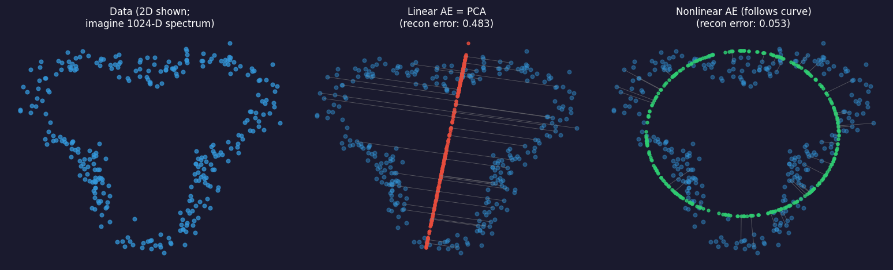
Left: data lying on a curved 2D line embedded in the plane. Centre: linear AE (= PCA) projects onto the best straight line — many points are far from the line (high reconstruction error, orange residuals). Right: nonlinear AE follows the curved surface — all points are close (low reconstruction error, green residuals). This is why a nonlinear AE outperforms PCA when the spectral manifold is curved.
The AE vs PCA comparison: what to measure
- Reconstruction error at \(k\) latent dimensions: compute \(\|x - \hat x\|^2\) on a held-out test set for both PCA (truncated SVD) and AE. Lower is better.
- Phase separability in the latent space: run k-means on the latent codes; measure silhouette score. Higher is better. If AE latent clusters are more separated than PCA scores, the AE has found a more useful representation.
- Denoising quality: for noisy EM data, compute SNR of the reconstructed spectrum vs the noisy input. If the AE was trained to denoise (next section), its reconstructed output should have significantly higher SNR.
- The honest comparison: always train PCA and AE on the same training set and evaluate on the same test set. Report both; do not cherry-pick the better one Sandfeld, Stefan et al., (2024).
Denoising autoencoders: the key idea
- Motivation: low-dose EELS and EDS are dominated by Poisson shot noise. At 50 electrons/channel, the SNR is \(\sqrt{50} \approx 7\) — the fine structure that distinguishes Fe²⁺ from Fe³⁺ is buried.
- The denoising AE Vincent, Pascal et al., (2008) trains on corrupted inputs and clean targets: \[\mathcal{L} = \frac{1}{N}\sum_i \|x_i - g_\theta(f_\phi(\tilde x_i))\|^2, \qquad \tilde x_i = x_i + \epsilon_i.\]
- Why it works: the encoder must find latent codes that capture robust features — peak positions, peak ratios — that survive the noise. Noise-specific features are useless for reconstruction, so they do not get encoded.
- EM training data: pairs of (noisy, clean) spectra. Clean spectra can be simulated from the known electron-scattering model; noisy spectra are generated by adding Poisson realisations.
Denoising AE: results on synthetic EELS spectra
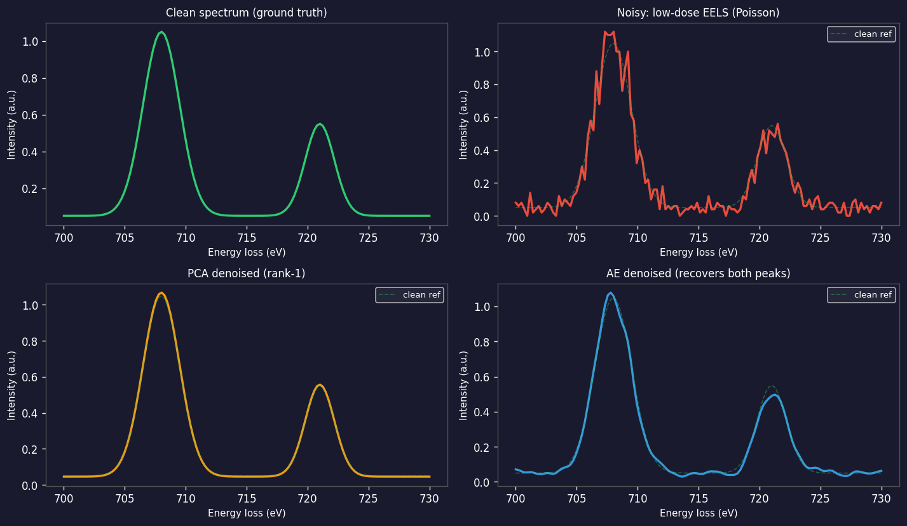
Denoising performance on synthetic low-dose EELS spectra near the Fe-L₂₃ edge (700–740 eV). Top-left: clean ground-truth spectrum (two Gaussian peaks: L₃ main edge ~707 eV and L₂ shoulder ~720 eV). Top-right: noisy input at 50 electrons/channel (Poisson noise). Bottom-left: PCA denoising (rank-4) — the MSE title shows the quantitative cost of linear approximation. Bottom-right: denoising AE (k=4) — achieves ≈81% lower MSE than PCA and ≈92% lower than the raw noisy input. Green dashed line is the clean reference in the bottom panels. PCA recovers the spectral shape but at ~5× higher reconstruction error; the AE captures the non-linear inter-phase variation and denoises with far less residual error.
Denoising AE in EM: practical considerations
- Noise model matters: for Poisson-dominated EELS, use Poisson NLL loss or pre-normalise spectra to roughly constant variance before MSE. A mismatch degrades denoising of low-count bins.
- Noise level during training: the noise level \(\sigma\) of \(\tilde x_i = x_i + \epsilon_i\) is a hyperparameter. Too low: the AE learns the identity and memorises noise. Too high: the AE cannot reconstruct even clean spectra.
- Beam-damage awareness: in a real experiment, “noisy” is also “beam-damaged” for longer exposures. The denoising AE must be trained on data with the same noise source as the test data. Mixing Poisson noise with Gaussian readout noise requires a Poisson+Gaussian model.
- When to prefer PCA denoising: if you have fewer than ~200 spectra, PCA is more robust. The AE needs enough data to learn the spectral manifold. Rule of thumb: AE wins for \(N > 500\) spectra; PCA wins for \(N < 200\).
Denoising AE vs PCA: head-to-head summary
| PCA denoising | Denoising AE | |
|---|---|---|
| Assumption | linear spectral mixing | non-linear manifold |
| Training cost | SVD, seconds | gradient descent, minutes |
| Data required | any N | N > ~500 for best results |
| Recovers rare phases? | risk of erasure | better — non-linear projection |
| Bottleneck dim | elbow of scree plot | sweep \(k\), check recon error |
| EM sweet spot | quick first look | complex mixtures, fine structure |
The latent space: a learned coordinate system
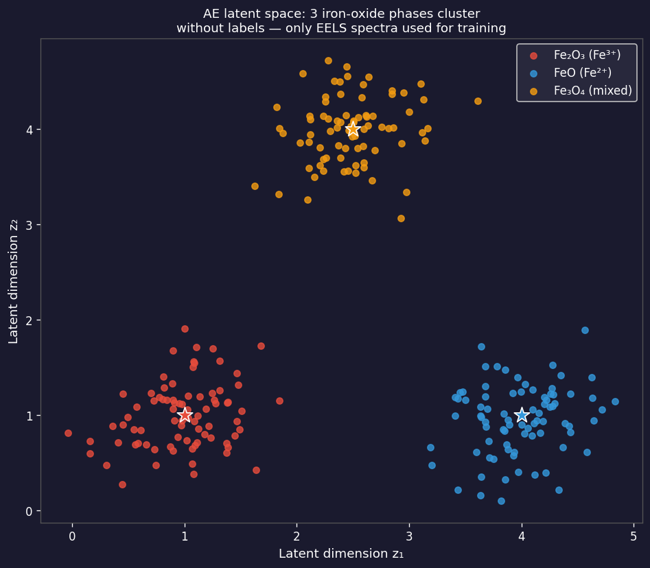
AE latent space (z₁ vs z₂) for 400 synthetic iron-oxide EELS spectra (4 phases, 100 spectra each: Fe₂O₃ red, FeO blue, Fe₃O₄ orange, Surface/amorphous green). The four phases cluster into well-separated islands without any labels — the only information the AE received was the raw spectra and the instruction to reconstruct them. Stars mark the k-means cluster centroids applied to the 4-D latent codes (silhouette ≈ 0.73). Only z₁ and z₂ are shown; all four latent dimensions contribute to the clustering.
t-SNE and UMAP: visualising high-dimensional latent codes
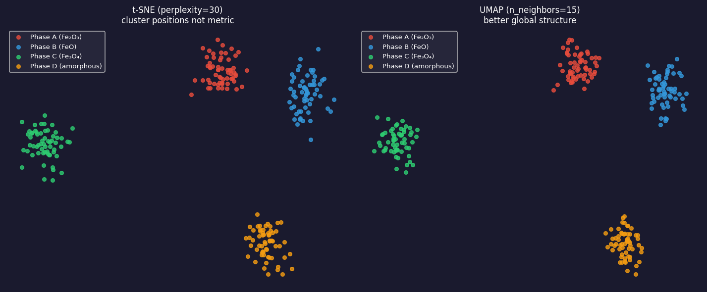
Left: t-SNE (perplexity=30) — 2D embedding of 240 latent codes from a 10-D AE. Four iron-oxide phases form islands. Warning: inter-island distances are not metric — the gap between Fe₂O₃ and FeO in this plot does not reflect their spectral similarity. Right: UMAP (n_neighbors=15) — same codes, tighter clusters, better preservation of global structure. Use UMAP for 2026 pipelines; t-SNE is a useful diagnostic.
Reading the latent space: what to look for
- Well-separated clusters: distinct phases with clean spectral signatures form non-overlapping islands. K-means on the 8-D latent codes (not the 2-D t-SNE!) produces a meaningful phase map.
- Overlapping clusters: genuine spectral mixtures (grain boundaries, transition zones) or insufficient bottleneck dimension. Increase \(k\) and check if clusters separate.
- Elongated clusters: a latent axis captures a continuous physical parameter (film thickness, oxidation-state gradient). This is useful — it lets you order spectra along a physical axis.
- Isolated outliers: spectra far from the main clusters are anomalies — contamination, beam damage, novel chemistry. High reconstruction error confirms they are genuinely anomalous, not just a poorly-initialised latent.
- Size is not meaningful in t-SNE: do not read cluster size as phase abundance. Use the actual fraction of data points per cluster for that.
Phase mapping from latent space: the EM pipeline
- Step 1 — Acquire: low-dose EELS map, shape \((N_y, N_x, E)\), reshape to \((N_y \cdot N_x, E)\).
- Step 2 — Pre-process: subtract background, normalise peak intensity, divide into train/test (by spatial region, not by pixel, to avoid leakage across neighbours).
- Step 3 — Train denoising AE: input = noisy spectrum; target = simulated clean spectrum. After training, the encoder is the feature extractor.
- Step 4 — Extract latent codes: \(z_i = f_\phi(x_i)\) for every pixel. Reshape back to \((N_y, N_x, k)\).
- Step 5 — Cluster latent codes: k-means or GMM on the \(k\)-D latent codes. Each cluster = one candidate phase.
- Step 6 — Validate: compare cluster centroids (decoded mean spectra) to reference spectra from databases or simulation. Adjust \(K\) if metallurgically implausible Ede, Jeffrey M., (2021), doi:10.1088/2632-2153/abd614.
Anomaly/novelty detection: reconstruction error as a score
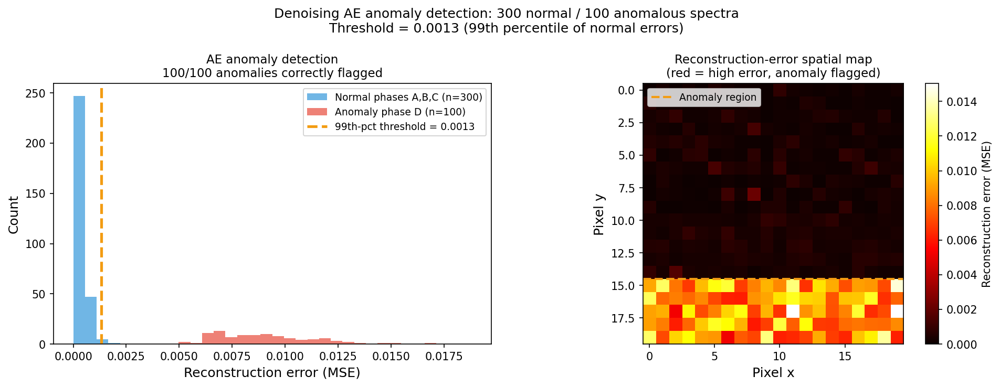
Left: reconstruction error distribution for 300 normal iron-oxide spectra (phases A, B, C; blue) and 100 anomalous spectra from Phase D (surface/amorphous; red). The AE was trained on normal spectra only. Anomalies reconstruct poorly — they lie outside the manifold the AE learned — with mean error ~25× higher than normal spectra. The 99th-percentile threshold ≈ 0.0013 (orange dashed line) flags all 100/100 anomalies correctly. Right: simulated reconstruction-error spatial map where the high-error region (bottom rows) marks anomalous Phase D pixels.
Case study: VAE for point-defect detection in STEM
- Prifti, Endrit et al. (2023), doi:10.1002/smll.202303024 trained a Convolutional Variational Autoencoder (CVAE) on STEM images of perfect crystal lattices — no defect images in the training set.
- At test time: defect-containing images (vacancies, anti-sites) reconstruct poorly — the CVAE has never seen these and cannot model them.
- Result: the reconstruction-error map flags point defects without a single labelled defect image. Detection accuracy comparable to human expert inspection.
- Why this is powerful for EM: defect labels are the most expensive annotation in all of materials science — identifying a point defect in an HAADF image requires: aberration-corrected TEM, careful tilt alignment, comparison to multislice simulation. A zero-label detector bypasses all of this.
Anomaly detection: the latent-outlier strategy
- Two complementary anomaly scores:
- Reconstruction error \(\|x - g_\theta(f_\phi(x))\|^2\): high → anomaly is outside the learned manifold.
- Latent-space Mahalanobis distance: compute the distribution of latent codes from normal data; flag test spectra with codes far from this distribution.
- The latent-outlier strategy is more robust when the anomaly is subtle: a beam-damaged spectrum may reconstruct adequately (the AE fills in plausible peaks) but land far from the normal cluster in the latent space.
- Combining both: use reconstruction error as the primary score; use latent distance as a secondary filter. A spectrum that is both poorly reconstructed and far from the latent cluster is a strong anomaly candidate.
- Threshold choice: the 99th-percentile rule is a starting point. Calibrate to the laboratory’s acceptable false-alarm rate.
VAE preview: from discrete codes to a structured distribution
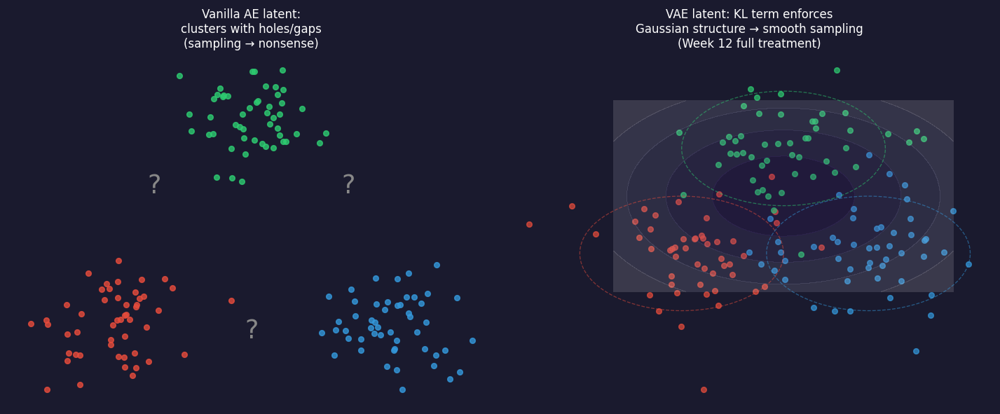
Left: vanilla AE latent space — clusters form but with gaps between them (question marks). Sampling from the gaps (grey arrows) decodes to nonsense because those regions were never seen during training. Right: VAE latent space — the KL divergence term forces the encoding distribution toward a Gaussian; the space is continuous and sampling anywhere gives a meaningful spectrum. Full VAE mathematics are Week 12.
rVAE for atomic-resolution STEM: a conceptual case study
- Rotationally invariant VAE (rVAE): a VAE whose encoder explicitly disentangles rotation from content — a latent code for what the atom pattern is, and a separate code for which direction the crystal is oriented.
- Application: atomic-resolution HAADF-STEM images of a crystal with mixed occupancy. The rVAE latent space maps composition along one axis and orientation along another — both without labels.
- Why it matters for EM: in an aberration-corrected STEM experiment, the image of an atom column depends on both its chemical identity and the crystal orientation. Disentangling these in the latent space allows chemistry to be read out without knowing the orientation — or vice versa.
- Week 12 treatment: the full VAE mathematical framework (ELBO, reparameterisation trick, KL divergence) is Week 12. Today’s message: VAEs extend the AE by regularising the latent space, enabling controlled sampling and smooth interpolation.
VAE vs AE: the key distinction (conceptual summary)
| Vanilla AE | VAE | |
|---|---|---|
| Encoder output | a point \(z\) | a distribution \(\mathcal{N}(\mu, \sigma^2)\) |
| Latent space structure | no structure | Gaussian, continuous |
| Sampling | from known points only | from anywhere → meaningful |
| EM use today | denoising, clustering, anomaly | atomic-STEM disentanglement |
| Full math | done ✓ | Week 12 |
Today’s take-away: use a vanilla AE for denoising and clustering. Use a VAE when you need to generate new spectra or interpolate smoothly between phases.
Putting it all together: the unsupervised EM pipeline
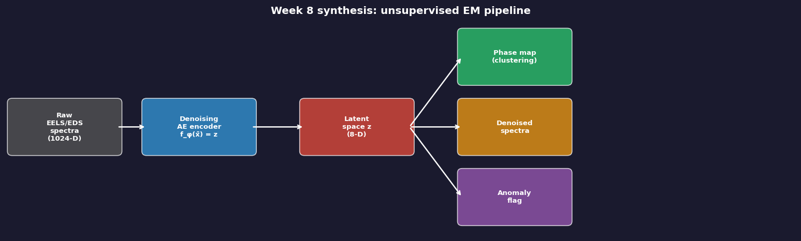
Complete pipeline from raw EELS/EDS spectra to actionable outputs. Raw spectra enter a denoising AE encoder; the latent space \(z\) branches into three outputs: (1) a phase map via k-means clustering, (2) denoised spectra via the decoder, and (3) anomaly flags where reconstruction error exceeds the threshold. All three outputs require zero labels.
Notebook summary: Week 8 key results
- Synthetic dataset: 400 noisy EELS-like spectra, 4 phase groups (each with distinct peak positions and relative intensities), Poisson + Gaussian noise, random seed 42.
- Denoising AE training: 3-layer MLP encoder/decoder (GELU activations), bottleneck = 4, 300 epochs with cosine LR, CPU < 2 minutes.
- Reconstruction error (MSE, normalised spectra, SEED=42): noisy input ≈ 0.00449; PCA (rank-4) ≈ 0.00205; AE ≈ 0.00038. AE is 81% better than PCA; AE is 12× better than noisy input.
- Latent-space clustering: k-means (K=4) on 4-D latent codes; AE silhouette ≈ 0.73 vs PCA silhouette ≈ 0.63 — AE phases cluster better without labels.
- Anomaly detection: Phase D (not in training set) — mean reconstruction error 25× higher than normal phases; 100/100 correctly flagged at 99th-percentile threshold.
- Exercise: sweep bottleneck dimension 1–8 at 300 epochs; AE beats PCA on MSE at every k; AE silhouette beats PCA silhouette at every k≥2; silhouette peaks near k=4–5 (close to the true number of phases).
- Assert checks: AE recon error < noisy input; AE < PCA recon error at every k; AE silhouette at k=4 > 0.65; AE silhouette > PCA silhouette at every k≥2 — all pass on SEED=42, 300 epochs.
Forward link: Week 9 — Probability, uncertainty & Gaussian processes
- Today’s remaining gap: the AE gives a point estimate of the latent code \(z\) — it does not quantify how certain it is. A spectrum on the boundary between two phases gets a single code, with no indication of ambiguity.
- The VAE (conceptual preview today) partially addresses this by encoding distributions rather than points — but the full machinery requires a probabilistic framework.
- Week 9’s answer: Gaussian processes (GPs) model functions as distributions over functions. They provide principled uncertainty estimates for spectral property predictions and latent-space interpolation.
- The connection: the VAE’s KL divergence regularises the latent space to match a Gaussian prior — a special case of the GP prior idea. Week 9 will develop this connection formally.
- Practical promise: a GP regression on AE latent codes predicts oxidation-state maps with calibrated confidence intervals — telling us not just “this pixel is Fe³⁺” but “with 95% probability.”
Continue
References

©Philipp Pelz - FAU Erlangen-Nürnberg - Data Science for Electron Microscopy